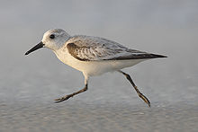
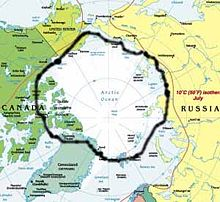
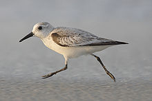
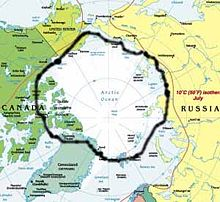

| Sanderling | |
|---|---|
|  | |
| Conservation status | |
| Binomial name | |
| Calidris alba Pallas, 1764 |
|
|  | |
| Sanderling breeding range. Black border marks southern limit. |
| Sanderling | |
|---|---|
|  | |
| Conservation status | |
| Binomial name | |
| Calidris alba Pallas, 1764 |
|
|  | |
| Sanderling breeding range. Black border marks southern limit. |
The Sanderling (Calidris alba, syn. Crocethia alba[1] or Erolia alba) is a small wader. It is a circumpolar Arctic breeder, and is a long-distance migrant, wintering south to South America, South Europe, Africa, and Australia. It is highly gregarious in winter, sometimes forming large flocks on coastal mudflats or sandy beaches.
It is somewhat unlike other sandpipers in appearance, which has led to the suggestion that it should be placed into a monotypic genus Crocethia. A more recent review (Thomas et al., 2004) indicates, however, that the sanderling is a fairly typical "stint" or small sandpiper and should be separated from the large knots with its closest relatives in a distinct genus.
This bird is similar in size to a Dunlin, but stouter, with a thick bill. It shows a strong white wingbar in flight, and runs along the sandy beaches it prefers with a characteristic "bicycling" action, stopping frequently to pick small food items. It eats small crabs and other small invertebrates. In spring, birds migrating north from South America consume large numbers of horseshoe crab eggs in the Delaware Bay area.
In spring, the birds arrive on the High Arctic breeding grounds (see map), where they lay 3–4 eggs in a ground scrape. On the nesting grounds, these birds mainly eat insects and some plant material.
The Sanderling is one of the species to which the Agreement on the Conservation of African-Eurasian Migratory Waterbirds (AEWA) applies.

{kind=link}
{kind=link}